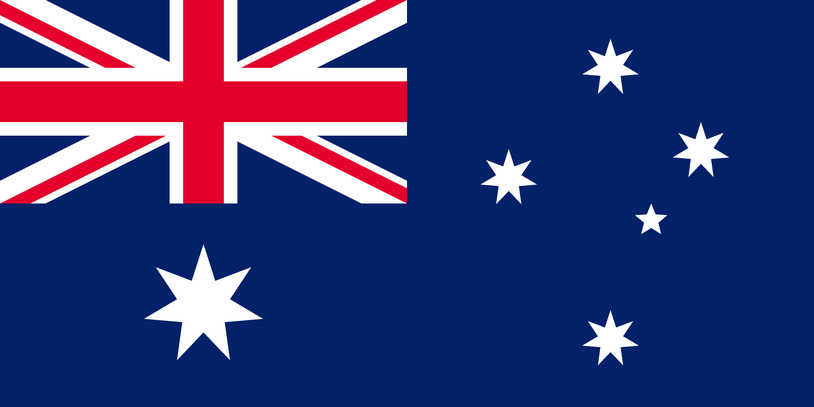

Австралия
Австра́лия (англ. Australia, МФА: [əˈstreɪljə], от лат. austrālis — «южный»), официальная форма — Австрали́йский Сою́з или Содру́жество Австра́лии (англ. Commonwealth of Australia, МФА: — государство в Южном полушарии, занимающее одноимённый материк, остров Тасмания и несколько других островов Индийского и Тихого океанов; является шестым государством по площади в мире. К северу от Австралийского Союза расположены Восточный Тимор, Индонезия и Папуа — Новая Гвинея, к северо-востоку — Вануату, Новая Каледония и Соломоновы Острова, к юго-востоку — Новая Зеландия. Кратчайшее расстояние между главным островом Папуа — Новой Гвинеи и материковой частью Австралийского Союза составляет всего 145 км, а расстояние от австралийского острова Боигу до Папуа — Новой Гвинеи — всего 5 километров. Население на 31 декабря 2018 года оценивалось в 25 180 200 человек, большинство из которых проживает в городах на восточном побережье. Австралия является одной из развитых стран, будучи тринадцатой по размеру экономикой в мире, и имеет шестое место в мире по ВВП в расчёте на душу населения. Военные расходы Австралии являются двенадцатыми по размеру в мире. Со вторым по величине индексом развития человеческого потенциала Австралия занимает высокое место во многих сферах, таких как качество жизни, здоровье, образование, экономическая свобода, защита гражданских свобод и политических прав. Австралия является членом G20, ОЭСР, ВТО, АТЭС, ООН, Содружества наций, АНЗЮСа и Форума тихоокеанских островов.
>Австрия
А́встрия (нем. Österreich, МФА (нем.): [ˈøːstɐˌʁaɪç] Информация о файле слушать), официальное название — Австри́йская Респу́блика (Republik Österreich) — государство в Центральной Европе. Население составляет 8,46 млн человек, территория — 83 879 км². Занимает 94-е место в мире по численности населения и 112-е по территории. Столица — Вена. Государственный язык — немецкий. Федеративное государство, парламентская республика. С 7 января 2020 года федеральным канцлером является Себастьян Курц. Подразделяется на 9 федеральных земель: Бургенланд, Каринтия, Нижняя Австрия, Верхняя Австрия, Зальцбург, Тироль, Штирия, Форарльберг, Вена. На севере граничит с Чехией (362 км), на северо-востоке — со Словакией (91 км), на востоке — с Венгрией (366 км), на юге — со Словенией (330 км) и Италией (430 км), на западе — с Лихтенштейном (35 км) и Швейцарией (164 км), на северо-западе — с Германией (784 км). Около 74 % населения католики. Индустриальная страна с динамично развивающейся экономикой. Объём ВВП по паритету покупательной способности за 2017 год составил 441 млрд долларов США (около 50 000 долларов на душу населения). Денежная единица — евро. Член Организации Объединённых Наций, Европейского союза. В 1955 году провозгласила постоянный нейтралитет и неприсоединение к каким-либо военным блокам.

Азербайджан
Азербайджа́н (азерб. Azərbaycan), официальное название — Азербайджа́нская Респу́блика (азерб. Azərbaycan Respublikası) — государство в восточной части Закавказья на побережье Каспийского моря, относится к Передней Азии и к Ближнему Востоку, а также, по мнению некоторых источников, частично и к Восточной Европе. Население, по оценочным данным на январь 2013 года, составляет более 9 млн человек, территория — 86 600 км², по обоим этим показателям является крупнейшей страной Закавказья. Занимает восемьдесят восьмое место в мире по численности населенияПерейти к разделу «#Численность, расселение» и сто двенадцатое по территорииПерейти к разделу «#Физико-географическая характеристика». Столица — Баку. Государственный язык — азербайджанский. Является светским государством. Азербайджан — многонациональная и многоконфессиональная страна. Большинство населения республики исповедует ислам (преимущественно шиитского толка), меньшинство — христианство и иудаизм. Унитарное государство, президентская республика. В октябре 2003 года пост президента занял Ильхам Алиев.Перейти к разделу «#Государственное устройство» Подразделяется на 66 районов, 11 городов республиканского подчинения и 1 автономную республику — Нахичеванскую Автономную Республику. Часть территории Азербайджана контролируется непризнанной Нагорно-Карабахской Республикой, часть — Арменией (эксклавы Кярки, Бархударлы, Софулу, Верхняя Аскипара). Азербайджан контролирует часть территории Армении (анклав Арцвашен). Омывается водами Каспийского моря. Имеет сухопутную границу с Россией, Грузией, Арменией и Ираном. Нахичеванская Автономная Республика — эксклав Азербайджана — граничит с Арменией на северо-востоке, Ираном на юго-западе, Турцией на северо-западе. Аграрно-индустриальная страна с развивающейся экономикой. Объём ВВП по паритету покупательной способности в 2012 году составил 98,776 млрд долларов США (10 624 доллара США на душу населения). Денежная единица — азербайджанский манат. Независимость страны провозглашена 28 мая 1918 года. Азербайджанскую Демократическую Республику, провозглашённую в 1918 году, называют первой демократической светской республикой в мусульманском мире
Албания
Алба́ния (алб. Shqipëria), полная официальная форма — Респу́блика Алба́ния[5] (алб. Republika e Shqipërisë [ɾɛpuˈblika ɛ ʃcipəˈɾiːs]), — государство в западной части Балканского полуострова. Население, по данным Института статистики Албании на 1 января 2017 года, составляет 2 876 591 человек, территория — 28 748 км². Занимает 136-е место в мире по численности населения и 139-е по территории. Столица — Тирана. Государственный язык — албанский. Албания — унитарное государство, парламентская республика. Президентом Албании с 24 июля 2017 года стал Илир Мета, пост премьер-министра с 15 сентября 2013 года занимает Эди Рама. Согласно «Economist Intelligence Unit», страна в 2018 была классифицирована по индексу демократии как гибридный режим. В административно-территориальном делении подразделяется на 12 областей.Перейти к разделу «#Административное деление» Располагается на юго-востоке Европы на побережье Адриатического и Ионического морей. Пролив Отранто отделяет Албанию от Италии. На северо-востоке граничит с Сербией, частично признанной Республикой Косово, на северо-западе — с Черногорией, на востоке — с Северной Македонией, на юго-востоке — с Грецией. Албания, наряду с частично признанной Республикой Косово и Боснией и Герцеговиной, является одной из стран Европы с преобладающим мусульманским населением. Албания — член НАТО с 2009 года. Официальный кандидат на вступление в ЕС (с 2014 года).
Алжир
Алжи́р (араб. الجزائر эль-Джаза́ир), полная официальная форма — Алжи́рская Наро́дная Демократи́ческая Респу́блика (АНДР) (араб. الجمهورية الجزائرية الديمقراطية الشعبية эль-Джумхури́ййа эль-Джазаири́ййа эд-Димукраты́ййа эш-Ша‘би́ййа, берб. ⵟⴰⴳⴷⵓⴷⴰ ⵜⴰⵎⴻⴳⴷⴰⵢⵜ ⵜⴰⵖⴻⵔⴼⴰⵏⵜ ⵜⴰⵣⵣⴰⵢⵔⵉⵜ) — государство в Северной Африке в западной части Средиземноморского бассейна, крупнейшее по территории африканское государство. Площадь составляет 2 381 740 км², что чуть больше, чем у Демократической Республики Конго (2-е место по площади на континенте). Алжир граничит с Марокко на западе, Мавританией и Мали — на юго-западе, Нигером — на юго-востоке и Ливией и Тунисом — на востоке. Бо́льшая часть территории страны лежит в пустыне Сахара. Столица — город Алжир.
Ангола
Анго́ла (порт. Angola), полная официальная форма — Респу́блика Анго́ла (порт. República de Angola [ʁɛˈpublikɐ dɨ ɐ̃ˈɡɔlɐ]) — государство в Южной Африке. Бывшая португальская колония, получила независимость в 1975 году. Член ООН с 1 декабря 1976 года. С запада омывается Атлантическим океаном, на юге граничит с Намибией, на северо-востоке и севере с Демократической Республикой Конго, на востоке с Замбией, а также Республикой Конго (эксклав Кабинда).
подробнее об государстве